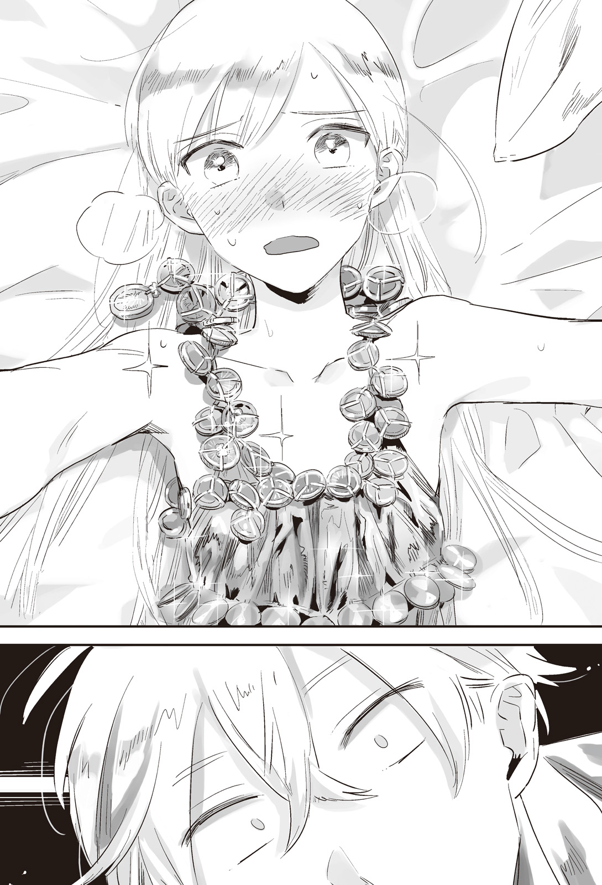
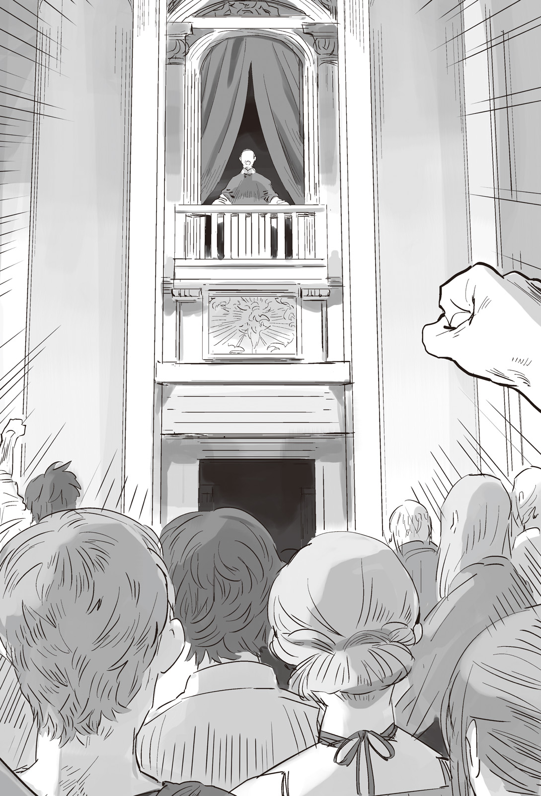

Chapter 1 – Honeymoon
.
Part 1
After becoming the king of the reborn Trystovy Kingdom, his coronation ceremony was held at the capital Millianna at the same time with his wedding ceremony with six wives.
However the continent’s upheaval wasn’t giving any leeway for Baldr who was at the peak of his happiness.
A beastman messenger from Nedras Kingdom arrived at Millianna and knocked at the palace’s gate while running out of breath──.
.
The wedding ceremony was finished smoothly with the blessing from the citizens and families. The arrival of the messenger was reported to Baldr secretly after the dinner party was finished.
No matter how much of an emergency the situation was, they couldn’t possibly pour cold water at the joyful atmosphere of the celebration.
In another country, the messenger would be told to wait for several days, but Baldr had the personality that hated that kind of consideration, and most of all the report came from the intelligence agency directly under Augusto.
Together with Augusto, Baldr brought himself to the secret audience room that was set up inside the palace. His expression was completely different from the his expression as groom who was in high spirits due to the wedding ceremony.
The inside of the room was dark with only limited number of people were allowed to enter. A beastman with pitiful appearance of bandages wrapping all over his body was waiting eagerly for the two there.
「──Pardon me. I have made you wait.」
「Not at all! Being able to see the countenance of your majesty the beast king from this close, i-is the greatest honor that this lowly one can possibly receive!」
The messenger was a young male of wolf-eared tribe who looked like he was still at his twenty. He was extremely tense the moment he saw Baldr and bowed so deeply it was like he was going to dogeza.
For the beastman race, the title of beast king was extremely heavy. That fact wasn’t at all different even for this resident of Nedras Kingdom.
「It’s my great honor to be granted this audience with your majesty. My name is Riesling Auflese of Nedras beastmen’s liberation army.」
「No need to bother with the preface. Tell me the reason of your arrival here.」
「Yes your majesty!」
Baldr had cooperated with the leader of Nedras Kingdom’s resistance, the Phantom Lagunitas as though they were dancing to the same beat, but it wasn’t like they had formally formed an alliance.
However the resistance had ignored that kind of formalities and directly dispatched a messenger to Millianna. There should be a really pressing reason for it.
「Please let me explain with all due respect. After your majesty took down General Mikhail, our Nedras Kingdom was in a state of lull for a while.」
General Fork Katukov who was dispatched to replace the famous general Mikhail Kalashnikov who was the pride of Answerer Kingdom wasn’t that much of a threat for the resistance.
Thanks to that, they thought that they had finally obtained the leeway to recover from the loss of manpower that was inflicted to them by Mikhail’s overwhelming might.
──However that only lasted for a brief moment.
The situation changed drastically due to Answerer Kingdom obtaining the title of Vhoipos that placed them as the protector of Europa Church.
The citizens of Nedras Kingdom who had been oppressed as the people of a vassal state were potential member of anti Answerer Kingdom faction.
That was why they were giving tangible and intangible support to the beastmen’s resistance, but due to the decision of Europa Church this time, the reaction of their believers was turned around.
In the first place the number of believers of Europa religion in Nedras Kingdom was second only to Answerer Kingdom.
The problem didn’t stop there. General Vladimir Kutuzov who was appointed as Fork’s successor declared that he would give protection to those who protected the faith and recognized beastmen as enemy.
Those who gave anonymous report or fought the beastmen were rewarded. They also received preferential treatment like tax reduction. Because of that the environment quickly worsened for a beastman organization to do their activity.
「──They got us.」
Even Lagunitas who had been completely focused on harassing the enemy and had continued fighting until now wanted to lament when faced with such blatant incitement to the people.
The people who wanted to escape from the harsh living before them happily showed their hostility to the beastmen like fish getting lured by bait.
Even so the resistance was still barely managing to function. It was because the number of people who thought of Nedras Kingdom’s future and wanted to remove the influence of Answerer Kingdom no matter what numbered quite a lot.
It also really helped that abundant operating funds were supplied to them secretly through Dowding Group.
「It’s truly shameful for us to ask for help from your majesty for something like this but……」
Riesling bit his lip in frustration and strongly clenched his fist.
A lot of the nobles of the old dukedom who got banished from Trystovy were recently dispatched to Nedras Kingdom as new reinforcement. They were a suitable pawn for Answerer Kingdom.
This was a technique that was also often used at earth.
An intermediary ruler was prepared to play the role as the bad cop, while they themselves were preparing carrot to make an appeal to the people as virtuous rulers.
After the rebellious energy of the people got whittled sufficiently, the intermediary ruler wouldn’t be needed anymore. They could be executed to serve as an example, while sparing only the useful people among them.
Either way, there wouldn’t be any drawback for Answerer Kingdom.
What was unexpected for Lagunitas was that the old dukedom nobles had been extremely cornered that they had no more future, on top of that their grudge toward commoners had reached an extreme from the process of their banishment.
The old dukedom nobles applied an oppression that contained no sympathy and mercy at all. Innocent commoners lost their life almost every day, Riesling reported while looking like he wanted to spit out.
Lagunitas too didn’t just sit quietly watching that happened, but no matter how many old dukedom nobles he killed, it wouldn’t hurt Answerer Kingdom at all.
Rather they were waiting for Lagunitas to attack the old dukedom nobles so that they could trap him.
Several resistance units had gotten into such trap and received horrible loss.
It was Answerer Kingdom who made use of old dukedom nobles as recycled garbage, but it was Baldr who cornered them to such degree. Therefore Baldr was also feeling somewhat ashamed in his heart.
They were useless nobles who were obsessed with their privileges. He hoped that they would sabotage Answerer Kingdom with their incompetence, as expected he never imagined that they would be used in this way.
Baldr thought that the best they could do would only be to request Answerer Kingdom to take back Trystovy. If they became a part of the army that attacked Trystovy in the future, they would become the enemy’s weak point instead.
If it was Valerie who had manipulated Trystovy for many years from behind the scene, then perhaps he would be able to predict such usage of malicious method.
「Our sphere of activity has already been reduced into very limited area. The number of soldiers we can mobilize has also been reduced to half. Even with Lagunitas-sama’s capability, we are already starting to become unable to mount any proper guerilla warfare.」
Minority race like beastmen would naturally stand out in human settlement.
Until now there were many humans who accepted them as fellow countryman, the old dukedom nobles had executed even the people who were involved with beastman as example, so the beastmen’s daily activity had been halted almost completely.
In the past there was a saying 「Divide and conquer」 that was used in British Empire. It was certainly an effective method if one ignored that doing so would leave a seed of evil that would grow to become a big problem in the future.
「I’m deeply aware that asking for something like this from your majesty is extremely insolent. However we are already at our limit. Please grant us reinforcement as soon as possible!」
「──Understood.」
Baldr accepted Riesling’s request without any hesitation at all.
「I’m indebted to Lagunitas-dono for the indirect aid he gave me during Trystovy’s civil war. And one way or another, I’ll have deal with Answerer Kingdom sooner or later.」
「Oooo! My deepest gratitude!」
Riesling kowtowed with deep emotion that had truly reached the peak.
He believed that the beast king that the beastman race had believed with all their heart until now was truly the legendary savior as expected.
「──However your majesty, sending military force in parts is a taboo.」
As the king’s assistant, it was only natural for the prime minister Augusto to give such advice.
Even if abandoning the beastmen of Nedras Kingdom was out of question, they shouldn’t dispatch soldiers easily without enough preparation.
It was still difficult to say that Trystovy Kingdom had completely recovered from the civil war. If they lost their precious military strength in this time, there was also the possibility of the country crumbling like how a dam could broke from a single ant’s nest.
「Of course. However there is no reason to ignore such bait when it’s already placed before us.」
Right now both Trystovy Kingdom and Answerer Kingdom were still in the phase of preparing for the outbreak of war.
However the conflict that revolved around Nedras Kingdom could become a good test as a warm-up for the coming decisive battle. That was what Baldr said.
「Besides we won’t need that many soldiers to mow down the annoying dukedom nobles.」
「──Then I shall leave it to your majesty’s judgment.」
Augusto bowed reverently to Baldr. When he lifted his face once more, he was smiling really cheerfully.
「Well, putting that aside, I’ll have your majesty fulfill your duty as king. First is the wedding night.」
「Nnaa?」
Baldr fully understood that Augusto was teasing him, but it was also a fact that this was a real problem. Or rather it was a matter that Baldr who was in the middle of his puberty was seriously concerned about in secret.
「B-but it should be the same for the prime minister too!」
「I’m different from a virgin! You virgin!」
「You traitor! You betrayed my feeling!」
「Ha-ha-ha! Your majesty has always betrayed me, so I should deliver this payback at least! I hope that your majesty will experience a failure that become great trauma!」
Riesling’s moment of feeling emotionally moved lasted only for an instant. He was speechless in a daze seeing the comedic act of master and retainer that suddenly started.
「It’s troubling if you look down on my master ! My preparation is already perfect! There is no need for prime minister to be worried at all!」
「Fufufu……this is why a virgin is really bothersome. Preparation? Any preparation will be just armchair theory that cannot be relied on at all when you haven’t even discard your virginity.」
In reality, there were a lot of nobles who called for high class prostitute and experienced sex before their first night with their bride.
Augusto didn’t even need to do that. He had been enjoying night adventures following his instinct liberally, but as expected his first time was something special for him.
Even now he could vividly recall the intoxication and failure of that night.
Even a lady-killer of Augusto’s level ended up in complete failure at his first night.
If his partner wasn’t an adult woman who was deeply understanding in that area, perhaps he would be seriously traumatized.
In that respect, Silk was undoubtedly a virgin, and it was unthinkable that a virgin like Baldr could skillfully lead her in the act.
「Aa, the nickname of your majesty’s father was Cameron’s Red Stallion was it? It seems that he is an extraordinary playboy who has achieved hundreds of conquest, but didn’t he tell your majesty how special the first time would be?」
「Muh……」
Now that he said that, Baldr recalled how when he was instructed of the way to handle woman, it seemed that his father told him that just for the first time he should accept everything and felt it with his heart…….
「W-w-w-w-w-what should I do? If even master has forsaken me, I’ll!」
「Resignation is important your majesty. At the very least you should be mentally kind to her majesty.」
「No no no no no, g-g-g-give me advice for the sake of a beautiful memory between Silk and me! Augusto!」
Riesling had already given up thinking.
.
Part 2
Baldr wasn’t the only one feeling expectation and anxiety for the wedding night.
Rather because they had greater number at their side, it could be said that the wives had been having debates and arguments frequently.
The wives had taken off their wedding dress and gathered in Silk’s private room wearing their respective casual wear. There they held a small tea party.
「First, tonight is my turn. Does anyone has any objection?」
Silk was bursting with a quiet determination. There was nobody who raised any objection. Although Satsuki was the only one who could possibly object to this by brute force.
The concubines agreed to Silk’s words with complete acceptance.
「Well, that’s the privilege of the first wife.」
「Go all out! Silk-han!」
「That’s……if possible please tell us your impression accurately later.」
「I-I-I’m nervous nya……I, I’m fine being the last one nya.」
Seyruun, Selina, Rachel, and Satsuki each said that. Then they spoke with each other about their impression and expectation for their moment that would arrive in the near future.
Even Silk who would go first was shouldering the pride as the official first wife. At the same time she was aware that there was anxiety and curiosity lurking somewhere in her heart.
(──But drawing back is not allowed! My pride as the first wife is on the line!)
The stupid doting parent Alford had raised Silk to be too fastidious to be honest.
Silk believed that she wouldn’t be inferior to anyone when it came to love and resolve, but when it came to love affair, she was no different from a naïve maiden.
(I should talk a bit more with Rachel before this……)
Most likely Rachel was the only one who had received formal education for the propriety of this kind of thing.
Seyruun and Selina had been completely devoted to Baldr all this time. Surely they didn’t have the slightest experience with man at all. Satsuki was also the same.
As for Agatha, she looked like someone who had abundant knowledge for this kind of thing, however Silk was aware that she was completely mistaken in her sexual orientation due to that excessive knowledge.
The ladies sometimes had idle talk about night activity, but Silk’s pride as the first wife never allowed him to ask for teaching from her other fellow wives.
(But, I have a method!)
Silk clenched her fist with eyes that looked like someone who was overthinking something. The only one who noticed it was Agatha who was like her big sister.
(Aa, this girl, she is absolutely thinking about something stupid……)
In most cases when Silk was like this, she would hold her head in regret later on, but Agatha was also a maiden who felt relatively reserved when it come to this kind of topic.
In a sense, Silk and Agatha were lacking experience point, or rather familiarity with the society even when compared to Seyruun or Selina.
In order to win against such women, perhaps they certainly needed some kind of method that was out of the norm.
(Besides, Silk-sama is also handicapped like that……)
Woman’s chest measurement was undeniably a stratified society.
This difference that had been decided since birth was something terrifying that couldn’t be overturned easily even with huge amount of effort or money.
Fortunately Agatha was in the winner group, but Silk and Satsuki had almost zero hope for growth even in the future.
The huge breasts group like Selina and Rachel were aware how Baldr’s gaze would often turn toward their breasts secretly.
From Agatha’s perspective, such advantage should make it possible for them to maintain their mental composure even at their first night.
(Could it be──no way.)
A bad premonition flashed at the back of her mind for a second, but Agatha decided to intentionally ignore it.
.
Part 3
Baldr’s bedroom was the middle of the spire that was towering high at the center of the palace.
Its size was around thirty tatami (around 50 square meter). The room was somewhat dreary with only a king size bed, simple alcohol shelf, wardrobe, and book storage filling it.
Outside the room there were guards at the door and also shadowy guards being on guard for 24 hours. Baldr’s privacy was nonexistent, but right now he had no composure to pay attention to that.
.
『Thank god this world isn’t like France.』
Baldr’s previous life, a high school student of the modern Japan, Oka Masaharu suddenly said that.
Baldr tilted his head in puzzlement.
『What do you mean?』
『At France’s era of monarchy, the king’s sexual activity was an entertainment for the commoners. There was a need to have the firs tnight in front of the public. It was also in order to proof that the prince will definitely be the king’s son.』
『What kind of shaming play is that!』
By the way this custom didn’t only belong to France royal family. In order to prove that the child the queen was pregnant with belonged to the king, a custom for a witness to observe their sex activity was common at the Middle Ages.
『The southern barbarians art really grand……such thing for me is really, really impossible……』
Baldr’s previous previous life, a general of the warring states era, Oka Sanai was also astonished.
『Old man like you who exposed your dangling penis in front of koban coins has no right to say thattttt!』
Perhaps because there was social etiquette to keep sexual activity a secret in Japan, the custom to open the noble’s sexual act to the public didn’t take root there.
Excluding exception like Shingon Tachikawaryuu, the most that happened was group sex culture blooming in a village society that was located in very rural area.
Baldr was glad from the bottom of his heart that there wasn’t that kind of custom in Aurelia Continent.
That kind of custom was fortunately not existing might be the secondary effect of the spreading of Europa Church that prized order.
.
──*Knock knock knock*
A reserved knocking sound came from the door at that timing.
*Gulp*, Baldr swallowed his saliva and he was barely able to squeeze out his voice.
「Come in.」
「……I’m……coming in.」
Silk timidly entered inside the bedroom with her face going red from shame until her neck.
Due to the dim light of the lamp, Silk’s body was standing out clearly against the dark background.
Her slender body was wrapped with a fabric that was like a sheet. The provocative figure underneath was still being hidden.
Even so, the fabric was unable to hide her body curve too.
His heartbeat sound was too loud, that when Baldr noticed, Silk was already sitting on the bed and turning her gaze toward him with moist eyes.
It seemed that she had said something to him, but he could only hear the sound of his heartbeat.
His throat hurt as though it had been burned. Not a single considerate word came out from his mouth. Even the numerous lessons that his master(Ignis) taught him weren’t useful at all right now.
「Silk……」
Even then he was able to suppress his animalistic desire and gently held Silk’s shoulders. It must be a feat that was only made possible by the gene that Baldr inherited. A normal virgin would be unable to endure and assaulted the girl at this point.
Silk’s shoulders were slightly shaking. His right hand that was holding her could feel it. It helped Baldr’s thinking ability to recover just barely.
「I love you Silk. I love all of you, more than anyone else.」
「I too, love you Baldr.」
Their lips pressed on each other as though they were sucked toward each other. They enjoyed the texture of each other’s lips pecking many times on their lips.
Before long they were stimulated to entangle their lips with each other. They began an intense kiss that greedily craved for the other. Baldr grabbed the back of Silk’s small head and became numb from the intoxication.
At this point of time, Baldr’s rationality was still remaining to be considerate to Silk and turned this moment to be a beautiful memory for the two of them.
The collapse of everything began the moment Baldr pushed down Silk’s body on the bed with a rough kiss.
──*Clink*
If a normal human heard that sound, perhaps they would only think of it as a normal sound of metals hitting each other. However there was no way Baldr’s ears would fail to hear that sound.
It was the alluring melody of angel that he would never get tired of no matter how many times he had heard it. That sound was none other than the sound of gold coin rubbing against each other.
Furthermore it was the Elizabeth gold coin of Mauricia Kingdom that Baldr loved the most!
Silk hardened her resolve and threw away the sheet that was wrapped around her whole body. Her hidden bare skin and underwear were exposed.
「Wwha-!」
Perhaps this was what was called paradise on earth.
Even if he had been warned beforehand to not be surprised, it would be absolutely impossible for him to keep his calm.
Silk was wearing a white camisole that was generously attached with gold leaves and gold coins as replacement for frills.
It was a seduction method that put everything she had on the line. She was able to think up such method exactly because she was aware of Baldr’s hidden sinfulness that was beyond redemption.
Baldr was speechless from excitement. Silk whispered to him in embarrassment.
「Err……eat me?」

*Snap*, Baldr clearly heard the sound of the string of his rationality snapping off.
「N-NO WAY I CAN ENDURE THISSSSSSSS! YOU’RE PREPARED AREN’T YOUUUUUUU!」
「KYAAAAAAAHN!」
Seeing Baldr was transformed into a wild beast, Silk shouted got you! and made a guts pose inside her heart.
For Silk, her rivals weren’t just the concubines, but even Baldr himself.
She couldn’t allow herself to lose in night activity of husband and wife even against her husband.
(I win! Chapter one, complete!)
She thought that. Until that point of time only──.
「Um……Baldr? Isn’t it enough already?」
「…………」
「Please. I admit that I went too far. Return to your senses quickly!」
「…………」
「I’m at my limit already. Just a bit, just a bit is fine so let me rest……」
「…………」
「Nhooo……I’mh turning into an idiot」
「…………」
「……………………(It’s not talking. It looks like it’s just a corpse)」
「It can’t be helped at all! This golden radiance is driving my Excalibur madddddddddddd!」
When the morning sunlight shined into the room, the tempestuous first night ended with the two harmoniously hugging each other with their soul completely spent.
.
Part 4
At the afternoon of that day, Silk finally got up from the bed and returned to her own room when it was past noon.
The wives immediately swarmed Silk who was only barely maintaining her posture with her corset.
「How was it for ya?」
「Was Baldr-sama gentle with you?」
「Or rather……you return really late. Was it intense?」
Selina, Rachel, and then even Agatha were approaching Silk with fervent look.
「……It was amazing.」
It was a terrific experience that made her felt like her secret garden would get soaked just from recalling it.
Silk didn’t find any word that could describe what happened and she looked down with her cheeks blushing in shame.
Rachel who should be Baldr’s partner tonight based on the order was bewildered.
「Um……can you describe it a bit more specifically?」
「……It was really amahzing.」
「SILK-HAN HAS TURNED INTO A SEX OBSESSED PERSONNNNNNNNNN!」
「This is useless nya.」
「……Gulp」
Selina, Satsuki, and Seyruun reacted like that.
They were half anxious and half jealous. But, the only thing that they could take from this was that apparently Silk was completely defeated by Baldr on bed.
That was the only explanation for this reaction from Silk.
「Just what in the world you have done?」
Agatha had vaguely realized what kind of strategy Silk had cooked up. She tried to probe what kind of method she used and how did Baldr react but…….
「……It was amahzing.」
「Now see here, the status of first wife will cry if you are too sex addled like this you know?」
「But, it was amahzing.」
Silk looked like her soul had left her body and only the shell remained behind. Agatha shrugged seeing that it didn’t look like she would be in a state that could talk properly for today.
「This is this girl we are talking about anyway, she must have schemed something and got the table turned on her. Rachel-sama shouldn’t use her as a reference.」
「That dignified Silk-sama is reduced into this……I feel a bit jealous.」
「C-certainly to be honest I’m also curious……」
Agatha and Rachel blushed slightly.
Given that they were maidens at that age, their interest and desire toward sex were strong. The wives swore firmly that they would definitely make Silk spat out the truth after her mind recovered.
「N-n-n-no way! That method is sealed! I was seriously worried for my life you know? It wasn’t something that a single person can possible handle……? Hm? I wonder if it’ll be alright with two people……」
Silk was falling into a wild delusion. It was unknown whether she would be able to protect the secret till the end.
In the future, the sound of clinking coins could be heard from Baldr’s room together with the screams of multiple women. It might be something that could happen or perhaps not.
.
Part 5
──Nedras Kingdom.
When the unification dynasty split into Answerer Kingdom and Mauricia Kingdom in the past, Duke Nedras who was an influential duke house declared independence and formed a small country.
For several hundred years after that, the country had stubbornly survived amidst the complicated power balance of the continent together with its neighbor Kadiros Kingdom.
However the situation changed when the previous king Morad II married Answerer Kingdom’s princess Barbara.
No, it would be more accurate to say that the situation was forcefully changed.
A son was born between the two. When the son had grown until six years old, Morad II suddenly collapsed from sickness and left this world in the young age of 28 years old.
This case was still suspected as an assassination by Answerer Kingdom.
There was no way Lathoka III who was still six years old had the ability to rule the kingdom. And so Duke Vassily who belonged to the pro Answerer Kingdom faction served as regent.
In respond to this chain of events, Duke David of the anti Answerer Kingdom faction formed an opposition forces, but at the following year he was suspected of plotting to overthrow the government and was executed.
Furthermore Barbara who became the empress dowager called for influential nobles from her homeland and appointed them as the king’s close aides. That was how the center of the nation was taken over.
Like this Nedras Kingdom lost its independence. It was a one-way path to become a vassal state.
From there it was the natural flow of things that the commoners who were burdened with heavy tax and the nobles who lost their vested interests aggressively rebelled all over the country.
While Nedras Kingdom was near Answerer Kingdom and had a lot of Europa Church’s followers, the human and beastman there had built a relationship of cooperation until now.
Many beastmen ran to Nedras Kingdom from Answerer Kingdom due to the massacre that occurred there. There was also the intention of the royal family that wanted to turn the beastman’s armed might into their personal force.
The tacit agreement that was exchanged between the two sides was broken by Duke Vassily’s act of confiscating the assets of the beastman race.
The fighting ability of the beastman race was hard to obtain as a military strength. That was why Nedras Kingdom protected their right and protected them as the people of this country.
However now that the country had practically become Answerer Kingdom’s vassal state, that military force was nothing but a nuisance.
The territory of Count Kovalenko who belonged to anti Answerer Kingdom faction was the place where most beastmen lived in the past.
The beastmen population was also concentrated at the territory of the purged Duke David.
Marquis Primakov who succeeded the territory of Duke David after that immediately began to persecute the beastman race.
All the lands of the beastmen were confiscated without exception, they were taxed heavily and forced to do heavy labor. Most beastmen chose to escape from Marquis Primakov’s territory.
When that happened, the territory of Count Kovalenko naturally became their only hope.
If asked why they put so much trust into Count Kovalenko, that was because the count had a beastman concubine who gave birth to a son named Lagunitas.
「They are also the people of our country!」
The house head of that time, Count Isaac Kovalenko resolutely stood firm on his principle even amidst the despairing internal state of the country.
Even though they had lost their political power, the military force of the anti Answerer Kingdom faction was still powerful.
Especially the beastmen who converged in the count’s territory. They were definitely a threat for Answerer Kingdom.
If the situation devolved into a head-on battle, then there would be no point spending all that time to take over Nedras Kingdom with political marriage.
If Answerer Kingdom could slowly spend dozens of years continuing with their effort, the opposition faction would decline without them needing to do anything, and they were bound to obtain Nedras Kingdom like a ripened fruit.
That didn’t happen──was because of the force of fate.
Unlike the outside nobles who came from Answerer Kingdom, the regent Duke Vassily who finally obtained authority was unable to be patient for that long.
「The situation with Count Kovalenko is honestly outrageous.」
If war would bring too many sacrifices, they just needed to assassinate the opposition. With such thought in mind, Duke Vassily called Isaac to the palace and poisoned him.
Kovalenko territory that lost its lord would helplessly get occupied by the army that Vassily dispatched. That was how it looked like but──.
「The murder of father is an unforgivable crime for the motherland.」
The one who yelled that and boldly stood up was none other than the young Lagunitas──the son of Isaac from his beastman concubine.
Lagunitas was still 17 years old at this time. He hadn’t even experienced his first campaign.
Even so he had received higher education as a member of a count house. Since his childhood Lagunitas had been given highly loyal beastmen as his vassals. He led five hundred soldiers and utterly defeated the army of 2000 that the kingdom dispatched.
It was the bitter miscalculation of Vassily who thought that there would be no problem anymore as long as Isaac was killed.
However although it was something that began from a miscalculation, his dignity as regent would drop if he stayed defeated against a countryside noble.
Vassily immediately gathered an army of 5000 soldiers and ordered them to subjugate the opposition.
「──Who said that we will fight you head-on?」
However Lagunitas was already starting to show a glimpse of the genius for fighting that he had since birth.
It was this battle that later on became the trigger for the fame of the Phantom Lagunitas who fought with ever-changing tactics and elusive movement like phantom.
In front of an overwhelming difference of military strength, the commander of the expeditionary force thought that Lagunitas would surely shut himself inside his castle for a defensive battle. He completely let his guard down at Ralf Town that was two days away from the count territory and suffered a night attack.
It was a surprise attack using stealth ability to approach without a sound and travelling ability that disregard any defense facility. It was truly the display of the beastman force’s worth.
「What’s going on-?」
「……You are underestimating me too much.」
「Hiih! Who the hell are you? Don’t tell me……you are a subordinate of the count?」
「Are you stupid, asking who am I after coming this far?」
Golden eyes laughed at the flustered commander. The young Lagunitas fully enjoyed the joy of beast hunting down the prey.
Perhaps it was only natural for human to be wary toward beastman. After all it felt this fun to toy with the prey, with the enemy like this.
「Do you think we will obediently lock ourselves in the castle if you bring 5000 soldiers with you?」
「D-do you think you will get away after doing something like this? W-we will slaughter all the beastmen in Kovalenko territory!」
「Don’t howl of something you can’t even do, you trash.」
「Hiiiiiiiiiih!」
*Tosu*
A sword stabbed the commander’s chest with a disappointingly small sound.
The commander stared at that sight in disbelief. He shook his head like a whining kid and expired.
「There is nobody more careless than the strong. Even cat will bite a cat in order to protect its own life, so why did you think that we will just quietly wait to be killed?」
Lagunitas slowly raised his right hand.
At the same time fires were set to the lodging houses of the expeditionary army one after another. The food and fodder to maintain 5000 soldiers, the weapons, all of them vanished into the flame.
Even an army of 5000 wouldn’t be able to fight in the commotion after they were attacked in their sleep and their surrounding turned into a sea of flame.
The number of people who killed each other in the confusion, people who were burned, and people who were late to escape and died in fire kept increasing that the army lost more than a thousand soldiers without fighting.
Even if they tried to continue fighting with the remaining soldiers, the food they brought with them had turned into ash, and the fodder for the horses had also been burned into nothing.
The commander who should make the decision also died in battle. The expeditionary army completely lost their will to fight.
It was Duke Vassily who was dumbfounded.
For a small country like Nedras Kingdom, a force of 5000 wasn’t something that could be easily gathered.
Although the pressure from Answerer Kingdom at the border had been reduced, they still needed the minimum number of soldiers as guards. They also needed soldiers to maintain the public order in the capital Hazuz.
In that state, the greatest number of soldiers that could be gathered was 30000 at best. As precaution against other nobles than Count Kovalenkov who were in the anti Answerer Kingdom faction, gathering 15000 or 20000 was the most he could do.
Among that number, 7000 soldiers were already defeated and returned home shamelessly. It was impossible to form a subjugation army again without reorganizing them first.
The repeated failure had thrown mud on the face of Vassily as the regent.
If he was defeated for the third time, anti Answerer Kingdom faction would obtain momentum and it might be Vassily who got purged instead.
A while after that, Vassily made a decision that was the worst for Nedras Kingdom.
He asked for army reinforcement from Answerer Kingdom, and allowed tens of thousands of Answerer Kingdom’s regular army to be stationed inside Nedras Kingdom.
──There was a wise saying, poverty dulls the wit.
Nedras Kingdom officially still maintained their independence, but they had been completely turned into Answerer Kingdom’s vassal state.
It was impossible to be independent in every kind of meaning if a country let go of their military independence.
Now no matter what kind of absurd demand Answerer Kingdom asked, Nedras Kingdom couldn’t have any strength or backbone to refuse it.
After obtained the just cause to effectively control Nedras Kingdom openly, Answerer Kingdom immediately dispatched 20000 soldiers of their regular army.
A subjugation army that numbered 30000 in total was formed and finally the advance to Count Kovalenko territory was resumed once more after several years had passed since the last attempt.
In contrast the count house could only mobilize 2000 soldiers in total. However half of that number was occupied by beastmen with their particular way of fighting. Such force couldn’t be underestimated.
As expected this time even the subjugation army didn’t let their guard down.
They were wary of a night attack from the beastmen and performed scouting thoroughly all the way until the count territory. They were trying to avoid taking risk but…….
「──Unfortunately, we don’t have any plan to fight conventionally.」
From the start Lagunitas had no intention to go along with the human’s war.
If they fought head on, the beastmen would never be able to win with their overwhelmingly inferior number.
Then it would be fine if they just won in what they could win.
It should be a way of fighting that displayed the beastman race’s strength the most.
Suddenly fire broke out in the encampment. The subjugation army that was alert all this time immediately readied themselves to intercept the enemy and attacked the beastmen who set fire to the fodder.
「There might be ambush! Don’t be negligent in coordinating with the other units!」
There was no need for the subjugation army to take risk because they had superior number. That was completely the correct answer, but that calm reaction backfired.
「──Guhah!」
The objective of the surprise attack this time wasn’t the soldiers and supplies. The objective was the assassination of the commander.
Lagunitas and his few elites targeted the commander and secretly took position for sniping.
The arrow that was fired with the beastman’s particularly powerful strength pierced the commander’s chest with unerring accuracy.
「──Sniper! There is assassin nearby!」
「Search the assassin! Don’t let them return alive!」
They desperately searched the surrounding of the commander who died instantly, but Lagunitas and his men was hiding in a place further than they thought. The range of beastman’s bow surpassed human by far.
「It’s troubling that you underestimate our night vision and physical strength. We aren’t in nearby location like that.」
Originally in case the commander died in battle, the vice commander would take his place. However the vice commander was scared because the commander was easily assassinated without even any battle breaking out.
The one who would be targeted next was him who succeeded the right of command, but the squad that assassinated the commander was still at large.
The vice commander was driven with desire to retreat. However Answerer Kingdom’s regular army that made up the majority of his army didn’t allow that.
For them, the assassination of Nedras Kingdom’s general was a godsend instead. It was also a good chance for them to display their strength.
They doubled the number of lookout. Since then no more surprise attack was allowed and the subjugation army finally arrived at Kovalenko territory.
This time they would be able to trample the opposition with overwhelming number without doubt.
It was only natural for them to think so. In fact, the battle was progressing with the advantage completely in the subjugation army’s side.
They also received great damage, but several days after the castle siege began, the subjugation army finally broke through the castle wall and rushed into the city like avalanche.
──But.
「Now, release the fire.」
Fires rose all at once from everywhere in the city that was jammed with tens of thousands army.
Even when they tried to run away, they were a large army. It would be different if they were at a plain, but they were unable to maneuver freely in urban area. The chaos spread further and the chain of command was thrown into disarray.
The subjugation army was nothing more but a pitiful sacrifice to be toyed by the violence of flame now.
「How can this be! They’re burning their own city!」
「The citizens have finished evacuating since a long time ago. After all it’s clear that if you guys are annihilated here, the kingdom won’t have any more spare strength.」
「Even so──this, this way to fight is not acceptable! Don’t you know anything about the pride of warrior!」
「I have never intended to become a warrior even once. Though I always want to become a hunter who finishes off a conceited prey who doesn’t know his place.」
「This is why animal like you is──!」
「The hunted animal here is you. You should pray to your merciful god before you die. Tell him sorry that you lose against animal.」
By sacrificing the beautiful townscape that he had been raised in since his childhood, he dealt a damage of 10000 to the subjugation army. Even the remaining 20000 had become practically useless as a military force.
With such result, it looked like Nedras Kingdom didn’t have any more spare strength to try anything with Kovalenko territory again.
But even someone as clever as Lagunitas was unable to measure the bottom of the strength of Answerer Kingdom, the strongest and biggest country in the continent.
A year after their reputation had been wholly crushed, General Mikhail Kalashnikov was dispatched as Answerer Kingdom’s trump card. Due to this Lagunitas tasted a horrible defeat for the first time in his life.
.
Lagunitas looked up to the huge moon that was floating in the sky. He recalled his days as a teen, when his father was suddenly taken away from him and he threw himself wholly into days of fighting.
「Mikhail was terrifying as an enemy, but he wasn’t a hateful man. However, those trashes from Trystovy……」
He hesitated to even consider them as opponent.
They were simply a target for extermination, like a harmful bug. Even the word kill wasn’t something that bunch deserved.
「Is everything prepared?」
「Yes, the preparation of the gunpowder that we received from his majesty the beast king is also finished. We are only waiting for Lagunitas-sama’s order right now.」
His close aide’s responsive reply made Lagunitas’s heart danced in excitement at the chance of counterattack that had finally arrived.
「──I was correct to bet on you, your majesty.」
Not long after Baldr’s coronation as Trystovy king, the new insurrection by the beastmen in Nedras Kingdom was going to start in an unprecedented scale.
.
Part 6
Currently the actual ruler of Nedras Kingdom was naturally not the young Lathoka III. However it also wasn’t the regent Duke Vassily.
Duke Vassily had been disgraced after his failure in subjugating Lagunitas. Although he hadn’t lost his position because of that, he had become an existence that was like a mere decoration.
Currently the actual ruler of Nedras Kingdom was the queen dowager Barbara and General Vladimir who was dispatched from Answerer Kingdom.
The main members of the bureaucratic organization within the country were already replaced with people who sided with Answerer Kingdom. Right now the government was unable to do anything without asking Answerer Kingdom’s permission first.
「──What happened?」
An intelligence agent who was wearing a grey outfit slipped into the office soundlessly. Vladimir asked curtly when he saw that.
Unlike his predecessor Fork, Vladimir was a general of administrator type who made it his principle to mainly use strategy.
His ability to command soldiers in the battlefield was inferior to Mikhail, but when it came to ruling a vassal state, his capability wasn’t just one level above the rest, but two or even three level above.
He was thoroughly familiar with how easy it was to control human desire using the difference in status.
That was why he was able to think up the perplexing strategy of using the old dukedom nobles as sacrificial pawn.
「The beastmen are going into offense once more. Almost half of the pawns have been killed.」
「So what? That lot is just a scapegoat from the start. It doesn’t matter how many of them are killed.」
「Yes, but it seems that this time they are being used against us.」
「What do you mean?」
Here Vladimir finally moved up his gaze from his paperwork to look toward the agent.
His sharp black eyes had the coldness that would make anyone who saw him to shrink back. Even though his black hair was only tied behind him casually, he gave off a pressure like a jailer in hell.
He was still young with his age that was in his thirty, however he was selected to be the commander of the expeditionary army to Nedras Kingdom because of his abnormal composure as though he had no emotion at all.
「Just like before, we had made arrangement to surround and annihilate the rebels when they were enraged by the bait but……this time our army was the one that got surrounded and annihilated instead.」
「The damage?」
「Most likely it won’t be less than 2000.」
「Any intervention from Trystovy Kingdom?」
「Considering the weapons that were used, that possibility is likely.」
「Got it. Tell me the details.」
Vladimir wasn’t flustered at all. He folded his arms in front of his table.
This was the report of the intelligence agent.
From the start the old dukedom nobles were just sacrificial pawn. It didn’t matter how many of them got killed.
The basic of the plan was to have them gather the resentment of Nedras populace to be concentrated to them, on top of that they were also used as bait for drawing the resistance’s attack.
Thanks to that the old dukedom nobles died in drove, but the resistance members, especially the beastmen were also taking considerable damage. They were even pressed with the necessity to hide underground temporarily.
Although the scale of the attack this time was quite large, with the road sealed and their superior number, the resistance should have nowhere to escape and got annihilated. However──.
The army got skillfully lured, then when the separated army gathered into one place, they were ambushed using gunpowder and burning oil.
There was already a report about gunpowder weapon being used at Mauricia and Trystovy. Vladimir also knew the information that his homeland was secretly starting to mass produce it.
No matter how he considered it, it was unthinkable that there could be a leak from the homeland. So he should consider it as intervention from Trystovy.
「──There is no change with the number of the resistance’s manpower correct?」
「Yes, at the very least the mobilized manpower wasn’t that many. Even if they are receiving outside aid, I believe that it’s only in the form of supplies.」
「So it’ll be the time to give the carrot soon huh.」
The old dukedom nobles had fulfilled their role as sacrifice enough. There wouldn’t be any problem even if he discarded them now.
Most of all it wouldn’t be wise to allow the resistance to gain momentum here.
「……Chernenko.」
Vladmiri’s adjutant Chernenko who was standing at his left straightened his posture.
「Lead a company and expose the crime of those old dukedom nobles. They must be piling up money more than we allowed them to anyway. And then give back all those money to the populace, I don’t mind, let them dream for a little.」
「Understood.」
「After that put a reward money for snitching on the resistance. Don’t be stingy with the reward, we won’t be the one paying anyway but Nedras Kingdom.」
Chernenko’s eyes widened in surprise when he noticed that his clever superior was saying something that sounded like a joke.
But even that only lasted for less than a second. He immediately accepted the order and left. As expected from the adjutant of Vladimir.
Looking at the result, Vladimir’s decision was correct.
With human’s psychological state, when they were cornered, they could be greatly influenced by the treatment from others even if it was just a sly act that was completely transparent.
The bad cop and good cop trick, where the bad cop that threatened the suspect and the good cop treated the suspect gently was also an example of this. If the old dukedom nobles who were the symbol of fear and hatred until now were purged, it was in the nature of the populace to feel wildly joyful against their better judgment.
And on top of that, if the taxes that the old dukedom nobles embezzled were returned and their tax rate for next year was halved, the people would unanimously yelled Vladimir’s name in praise.
「Vladimir!」
「Long live General Vladimir!」
「Die! You cursed Trystovy stray dogs!」
It was a greatly disappointing result for the resistance that finally took the first step of counterattack to remove the old dukedom nobles.
「──Good grief, facing Mikhail was far easier compared to this.」
Lagunitas who was trying to make a comeback from his disadvantageous position looked up to the sky in lamentation at this result.
This liberation from the oppression should be his accomplishment.
And yet he helplessly allowed Vladimir to snatch this achievement. It was a painful blow to the resistance, politically and militarily.
The resistance’s supporters were increasing in number was solely due to the strong oppression.
In the end the populace didn’t care who their ruler was as long as the stability of their life was guaranteed.
The only one who cared was the rich who advocated the protection of culture and tradition, and politicians who could draw a vision about the country’s future to some degree.
What was unexpected for Lagunitas was that Answerer Kingdom didn’t even feel like keeping up appearances of aiding Nedras Kingdom anymore.
「It’s unbelievable that a foreigner like Vladimir can make an edict about tax reduction.」
At this moment, Answerer Kingdom had become a liberator that was more reliable than Nedras Kingdom in the mind of the populace.
However this was a fully-fledged infringement to the state sovereignty.
Most likely there was nobody remaining in Nedras Kingdom with the power to oppose it.
It was the proof that the hijacking of the center of the country had arrived until the final stage.
Lagunitas’s memory of the era where the discrimination to the beastmen wasn’t as severe as now, his warm memory of intimately interacting with the populace as the illegitimate child of Count Kovalenko felt so far away.
「Beast king……what will you do if it’s you?」
Would he be able to protect those peaceful days if he was as strong as Baldr?
The nickname Phantom Lagunitas felt really heavy and painful right now. He secretly let out a sigh.
It was a face that he absolutely couldn’t show in front of the subordinates who believed in him.
.
「──Lagunitas-sama.」
「What’s the matter?」
There was a reserved knocking, then the huge body of his subordinate Brook entered sluggishly.
Although he wasn’t a beastman, he was a knight who served Kovalenko House. For Lagunitas, he was one of his few confidants who he could open up to.
「There is a messenger from his majesty the beast king.」
The timing felt as though his pessimism had been seen through. Lagunitas was startled and his gaze wandered around for a moment, but he immediately recovered his composure.
「That sounds really promising.」
He felt frustrated while at the same time relieved somewhere in his heart, as though he was saved.
While the two of them were fellow dreamers who wanted to build a paradise where human and beastman could live as equal, Baldr had accomplished being a king of a country when he was originally just a heir of a mere count house.
Baldr had accomplished something that he couldn’t. Lagunitas was unable to suppress the feeling of admiration and respect that was flooding out inside him.
.
Part 7
The concern that Lagunitas harbored was certainly pushing Nedras palace into chaos.
The management of the country would crumble if a general of Answerer Country could decide the tax rate as he pleased.
Duke Vassily who was standing at the summit of the political administration though imperfectly threw his glass on the floor with his vein pulsing on his forehead.
「How dare that brat do this-!」
His rage toward Vladimir was completely justified.
This wasn’t at the level of infringement to state sovereignty anymore. What Vladimir did was clearly a hijacking.
There was no doubt that Vladimir was already drawing the blueprint of extinguishing the small country called Nedras Kingdom in the future and merging the territory with Answerer Kingdom.
And yet, Vassily couldn’t take the option of chasing out or fighting Vladimir.
If he did something like that, he would immediately get assassinated or overthrown and forced to retire.
That was how great the difference in national power between Nedras Kingdom and Answerer Kingdom.
「I didn’t become the regent for something like this……」
He thought that if it was him he would be able to lead Answerer Kingdom around by the nose and maintained the political balance.
He purged the anti Answerer Kingdom faction also because he believed that it was necessary as a countermeasure against Answerer Kingdom.
When the previous king died prematurely, Nedras Kingdom didn’t have the leeway to allow internal conflict.
He believed that in order to oppose a large country like Answerer Kingdom, there was no way other than to concentrate the political power on himself even if he would get slandered because of that.
If only Lagunitas didn’t rebel, then perhaps right now he would still be able to maintain some slight influence.
Either way, he had no intention of sitting quietly like this and allowed the merger to happen.
「I still have a chance. I will be the one making Trystovy Kingdom and Answerer Kingdom to dance on the board.」
He would profit from the fight between the two major countries.
It was a classical method that had been done repeatedly since the ancient times, but that was exactly why Vassily thought that it could be effective at the present time.
There was already no way for this country to survive other than selling favor expensively to the winning side at the future.
「──If anyone get in my way, then I won’t spare them even if it’s his majesty. I’m not planning to leave behind my name in history as the regent of a destroyed country.」
.
Part 8
The church’s believers were holding their breath while watching a man.
The number of believers who were concerned about the danger to Europa religion and gathered at the headquarters in Solvidivian numbered around 30000.
Not all of them could be used as soldier, but as expected the church’s influence was still vast.
Compared to major countries like Answerer Kingdom or Mauricia Kingdom, the pope territory was so small that their territory and population couldn’t even begin to compare, but if the solid defense facility of the territory and the fighting strength of the fanatic believers were taken into consideration, it wouldn’t e an exaggeration to call this place impregnable.
In addition the church’s sacred knight order numbered roughly 20000. If the pope territory got attacked, volunteer soldiers with even greater number would gather from all over the continent.
The pope was watching the wild enthusiasm of these loyal and brave believers with a cold gaze. He secretly held them in contempt inside his heart.
── Few.
What the pope hoped for was a large group with number that surpassed 100000, including career soldiers among them.
A number that could still be contained in a single Soldividian’s square wouldn’t enough at all to face Baldr.
Had the influence of the church fallen until this low?
Who could possibly imagine that Europa Church that was the central figure of the continent’s religion could crumble so easily like this in less than several years.
Trystovy Kingdom and Mauricia Kingdom breaking off relations with the church despite having relatively a lot of Europa believers among their people played a large part to this situation.
It was also surprising that the believers just accepted it very naturally.
The commoners who were living their daily life would prioritize reality as long as they could find hope within their livelihood──the pope had forgotten that.
Human would devote themselves to religion the most when there was no hope in reality.
When Baldr won the wars, the living standard in both Trystovy Kingdom and also Mauricia Kingdom had clearly increased.
The people were simply choosing their loyalty to the country and the reality of their daily life over their faith to Europa religion.
The pope’s irritation was great because he was unable to understand that with sense of reality instead of being fixated to theory.
However he had a role that he had to accomplish right now. As the pope, as the protector of mankind’s future, he had the duty to fight despite his dissatisfaction.
「O servants of the mighty god!」
「Your eminence!」
「Glory to the great name of Europa!」
Stir silently spread among the people. The pope lightly raised his hand to calm down the commotion.
「How admirable that all of you have gathered under the god despite all difficulties! The gate to heaven are opened wide for everyone here!」
「OOOOOOOOOOOH!」
For a believer, having their faith recognized brought them a happiness that couldn’t be replaced by anything else. After all they saw no worth in this world and only found value in the world after the death.
「However! There is still a danger that we the servants of our beloved god has to overcome!」

The situation of the church at the present time was worse than expected.
The pope was an amateur in war. He only allowed a limited supply of holy relics to Answerer Kingdom. That also caused a negative consequence.
Certainly the holy relics were powerful weapon, but because the number was insufficient, Trystovy Kingdom and its allied countries found a breathing room to run rampant all over the continent both politically and economically.
Right now the fact that Answerer Kingdom possessed the greatest population and economy on the continent was shaken. Trystovy alliance was getting the upper hand in the currency trading.
In the worst case, there was also the possibility of Answerer Kingdom being put in disadvantage because currently they were also holding seeds of conflict in the form of Nedras Kingdom and Grand Duchy Tenedora.
(Good grief, things turn out like this because of the fixation with hiding the holy relics!)
The holy relics had to be hidden. Their usage had to be kept at minimum so that it wouldn’t be spread out to the outside world. Such restriction was annoying.
If only they weren’t stingy with the usage of the holy relics at the early stage of Trystovy civil war, it would be possible to kill Baldr at that time.
The pope understood that it was pointless to keep thinking about that.
After all when he looked back, it was clear that there was no reason for the church to act so openly at that time.
If the secret of the holy relics got exposed to the public, a long time and outrageous political effort would be needed to cover it up again.
In fact, the production of gunpowder weapons was rapidly advancing. Even when the war was over, it would be almost impossible for the countries to let go of it.
That was why he wanted to consign Baldr to oblivion with minimum usage of the holy relics.
The pope could see the risk if the relics kept spreading out to the world like this.
Generations of popes were keeping the secret of the holy relics with absolute must was because of that.
However it was also certain that it was necessary to commit such taboo if the church’s survival was threatened like this.
「The one who should fight is only not those with sword. Spreading the teaching of god, gathering the children of god, vilifying the enemy of god, taking away the money of the enemy of god. Everything is a fight in order to protect god. Any method is permitted. The god is surely praising the loyalty of all you his loyal servants!」
「OOOOOOOOOOOOOOOOOOOOOO!」
The believers became crazily passionate and shed tears. The pope’s heart was gradually freezing in front of them. The lake of his heart was immediately locked under a thick wall of ice.
「Your life is together with the god! In front of the god’s enemy, I shall guarantee that all of you shall be invited to heaven even if you die!」
Tens of thousands, perhaps hundreds of thousands of people might die.
So what. The pope’s frozen heart wasn’t moved at the slightest.
Even though all these virtuous believers were manipulated by his words to head to their death, he was able to see them off emotionlessly like mowing off wheat.
Die.
Die.
Die all of you for the sake of god.
In order to protect the future of mankind, adult, children, believer, non-believer, man, woman, the rich, the poor, all shall die equally for the god’s sake.
He would simply froze all his feelings, his conscience, his faith, his affection, his happiness, his joy, his amusement, everything to fulfill his role.
「Now stand up! Stand up and bring down the hammer of justice on the god’s enemy! God is watching over our faith and strength!」
「Glory to the great name of Europa!」
「Europa banzai!」
「This life, everything is for Europa!」
Nobody could stop it anymore.
Europa Church would stop scheming in the dark like before. They would switch their plan of action to an open war of military strength.
While he knew the depth of his sin better than anyone, the pope was unable to let anyone knew what was going on inside his heart.
Even the man who in the past aimed to rise higher by scorning his colleague and using his superior as his stepping stone was shouldering a heavy responsibility that he couldn’t surrender no matter what.
.
Part 9
Far apart north from Trystovy Kingdom was Gartlake Kingdom.
The head shrine maiden of beast god Zoras who was effectively the leader of the cat-eared tribe that lived there, Sakuya Kagetsu narrowed her eyes at the letter that was sent to her from her daughter.
It seemed that even her daughter had finally become adult.
It was worth it for her to threaten her by preparing a marriage talk with other man to give her a push in the back.
She hoped that her daughter would quickly give birth to the beast king’s son so she could prepare that child as the head of the next generation of cat-eared tribe.
Unfortunately Satsuki couldn’t become Baldr’s first wife, so it should be appropriate to let her child to succeed the name of Kagetsu.
「Even so I wonder……can that girl do it properly?」
Because Satsuki herself had no motivation at all, or rather because her mentality was too childish, she had no time to teach her about things like bed technique and the like.
「No no, there is no man who won’t fall in front of shrine maiden princess-sama’s charm!」
「I’m happy with your support for that girl, but still」
The great general Dominicus who knew how mighty Satsuki was seemed to seriously thing of her as a peerless beauty, but it was only a silly opinion that was similar to being an idiot parent.
「I have been taking care of the princess for many years since she still needed diaper, and now she finally has grown up to receive the affection of his majesty the beast king! This Dominicus is moved to tears!」
「……I was really busy that I had to borrow your help to raise her, but now I regret it a little.」
「Aaaaa! Just from recalling the innocent and lovable smile of the princess! I! Iiiiiiii!」
「Shut up, you’re annoying.」
Sakuya landed a backhand blow on the back of Dominicus’s head and knocked him out in one blow. As expected from the head shrine maiden, she lived up to her reputation.
Sakuya’s valor was still going strong even now as someone who was as famous as the pride of Nordland, the Thunder of Hellsing Gina.
「……Well, as childish as she is, that girl is also a woman. In her own way she is good at getting spoiled by the one she give her heart to.」
When she looked at the line up of Baldr’s concubines, she didn’t see anyone who seemed like an innocent and spoiled girl like Satsuki.
Each woman had their own weapon.
For example Silk’s weapon was her dignified and noble bearing, while Selina and Rachel’s weapon might be their captivating allure as mature woman.
It would also depend on Baldr’s preference, but Sakuya was also a parent. She didn’t doubt Satsuki’s loveliness at the slightest.
「Fufufu……to think that the day I can listen to Satsuki going on about her love affairs like this, I too have grown old.」
「You only notice now?」
「It means war if you are commenting about a woman’s age, you oaf!」
「Hogerah!」
Dominicus who recovered from the painful blow on the back of his head ate Sakuya’s full powered uppercut on his jaw and fainted. After such blow, he might not wake up anymore for half a day in the worst case.
「Hmph!」
It was fine for she herself to say that she had grown old, but it was irritating to hear it from a man. Sakuya too was at a complicated age.
Even so, he should feel honestly happy that Satsuki’s feeling came true and she got married with Baldr.
Based from what the letter said, her night activity was also quite successful──or so she wanted to believe.
No, surely it was alright, perhaps.
.
「──What’s wrong Satsuki?」
「It feels like Okaa-sama is making fun of me nya. Even though I’m already a mature woman nya.」
「Mature huh……my bruise from Satsuki’s kick still hasn’t vanished though……」
「T-that’s……I’ve apologized many times nya! Because it felt really hurt……geez! Husband is unfair nya……」
.
Just now it felt like she received some kind of signal transmission but it must be her imagination.
「Now then……」
She carefully put the letter from her beloved daughter into a box, then she dropped her gaze to the other letter and the thing that was securely packed inside an oak box.
There were two layers of cushion inside the box so that the content wouldn’t be broken no matter what. It was as though the box was transporting a poison that was hard to handle.
Furthermore the sender was Gina, which made it all the more suspicious.
Although right now they were comrades who mutually served the beast king Baldr, the two of them had spent the majority of their lives seeing each other as rival.
The ill feeling between them hadn’t completely vanished by any means. Rather she wouldn’t even want to listen to what the other had to say if not through Baldr’s intermediation. It was surely the same for Gina.
「And yet she is sending me a letter──I have nothing but bad premonition.」
Sakuya’s hunch was correct in a sense.
Perhaps this poison was something stronger than a powerful medicine that would overturn the way this world work from its root.
Sakuya carefully opened the wrapper and what appeared from inside the wrapping of many layers of strong fabric was a cylinder that was made from silver metal that she had never seen before.
「──What’s this?」
That was the sacred relic that was used by Europa Church’s intelligence agent Martell at the fierce battle between Baldr and Mikhail at the outskirt of Continerri territory.
It was the trump card of Europa Church to seal the King’s Gate. Nothing was understood about it, not the era of its creation, who was the creator, or how it was created.
Why was there a need to send such mysterious and dangerous object until far away at Gartlake?
「──It’s hard. It doesn’t seem to be iron or steel. What is this thing for? It doesn’t look like some kind of ornament.」
Sakuya stared closely at the relic. Then her eyes caught the engraving on the surface of the cylinder that seemed like letters.
「Oi oi, this is──」
Sakuya’s expression turned bewildered.
Gina’s letter mentioned that this was a spoil of war that was left behind by the church’s combatant.
That Europa Religion that was hostile toward beastman race──.
「……It’s old and not really readable but, it’s really similar with the beastman’s ancient letters. Why was something like this in the church’s possession?」
Sakuya stared closely at the church’s holy relic.
She didn’t have the slightest idea of the material of this thing. What was it created for, who and when was it created, it had been a long time since she obtained something that she completely didn’t understand like this.
It felt like she finally understood why a message came to her from Gina who shouldn’t want to have anything to do with her.
「……This might be interesting.」
To be honest, she also wanted to fight under Baldr like Gina.
Although her golden age had passed, she was confident that she could still raise achievements at the frontline.
However Satsuki was already sent there. The influence of the cat-eared tribe within the country would vanish if even Sakuya also went to Trystovy.
The problem was that even though both of them were heroes, Sakuya’s position in Gartlake Kingdom was far higher compared to Gina’s position in Nordland Empire.
In exchange, because Sakuya had the highest position among the beastman race in Gartlake, she was able to peruse a lot of good quality materials.
Gartlake wasn’t one of the successor of the unification dynasty after its break up. Because of that its prejudice toward beastman was weaker than Nordland. Many old documents here avoided being scattered and lost.
「This lettering is similar with the letters on the excavated relics from the era even before the unification dynasty.」
Sakuya carried the holy relic on her side and walked toward the underground room where the secret documents were stored.
*Katsun katsun* Hard footsteps echoed through the narrow underground passage.
「After all even Nordland doesn’t have as many literature and relics as here.」
This collection of past literatures and relics was started by the head shrine maiden three generations before Sakuya.
Originally the reason for it was in order to solve the dispute between the dog-eared tribe and cat-eared tribe that had gone on for so long──to find the answer of which tribe was the killer of the beast king Brocas.
All this time both sides had believed that the other was the culprit who assassinated the beast king and invited the split and discrimination to the beastman race on the whole.
Sakura’s great grandmother, Sakura was also the same.
She couldn’t forgive that the cat-eared tribe was suspected to be behind the beast king’s assassination──with such self-serving reason, she invested a vast amount of fund to begin collecting materials.
──However.
In contrast to Sakura’s wish, she was completely unable to find any materials that proved the dog-eared race to be behind the assassination.
Most documents that talked about the dog-eared tribe’s treachery and assassination were something that was written at Gartlake after the split. Some very unreliable documents even stated that the beast king actually had cat ears.
However as the head shrine maiden, Sakura knew that the beast king──those who had King’s Gate came from a mixed blood between human and beastman and actually didn’t have any animal ears.
Just why was she unable to find any proof?
Had the dog-eared tribe managed to thoroughly destroy even all anecdotes and proof about the beast king?
Was something like that really possible to be done by just a single tribe?
That question was passed down to her daughter, and then to that daughter’s daughter, and finally to Sakuya’s mother Sayuri.
A question surfaced, that perhaps it wasn’t the dog-eared tribe that killed the beast king?
It was a very outrageous question that affected the identity of the tribe, so Sayuri only spoke about her suspicion to Sakuya alone and nobody else.
When Sakuya first heard it, even Sakuya suspected that perhaps her mother had gone senile.
But when she inherited this secret materials storage from her mother, Sakuya was unable to prevent the same suspicion to deepen in her heart as years passed.
Even so if nothing happened, Sakuya too would surely choose to keep this secret to herself until her death.
The situation changed when Baldr’s coronation became definite.
The earnest desire of the beastman race──for a king to appear from among their race.
Using the unwritten law that all beastmen had to unite under the beast king, the futile conflict that had been repeated until now between the dog-eared tribe and the cat-eared tribe could be ended.
Sakuya succeeded in winning that all or nothing bet.
Now Sakuya had entrusted to her daughter who was also a King’s Gate owner to carry on the duty to show loyalty and contribute to the beast king, while she herself began to investigate the history with all her effort.
「──That letter……where did I see it?」
The materials were sorted based on the era. Among those there was a corner for things with unknown use, unknown category, or unknown era.
There was a cylinder that looked similar with the holy relic from Gina among that area. Sakuya lifted that object that weighed around 20 kg with one hand and stared at it for some time.
「As I thought, it’s quite different.」
The shape was similar, but the size and design and the written letters also seemed to be different.
Sakuya tried to shook it, tap it, traced the shape, looking for something that could be a clue, but the holy relic stayed quiet without telling her anything.
「Well, there is nothing to learn just as I thought.」
There were also things that Sakuya had learned from collecting relics until now.
There were numerous tools here who must have some kind of important use in the past. However they never did anything even once no matter how much Sakuya researched them.
Was it impossible to activate the relics from era before the unification dynasty just as she thought?
The relic this time was something that the Europa Church used, so she hoped that it would be possible to activate it, but as expected it didn’t show any reaction at all.
「Even so, this letter is too similar with the trait of beastman language……」
Currently the beastman language was only used in very few occasion, like religious ceremony and the like.
The letters had peculiar form that was different from the letters that were used by the human of Aurelia Continent. The difference was like how English alphabet was different from kanji.
「──If it can be used by human but not by us then……」
She could think of many reason for that, but a single conclusion was forming inside Sakuya.
While beastman race had movement ability and fighting ability that surpassed human, there was just one reason why the beastman race was forced to accept their lot as a discriminated race that had to live in the shadow.
That was because beastman didn’t have mana and couldn’t use magic.
Sakuya’s guess was right on the mark.
Martell needed a vast amount of mana to use the holy relic.
Then why was a relic that couldn’t be used by beastman was using letters that looked similar with the beastman language? And then what was the reason such thing was in the possession of Europa Church?
It seemed that it would still take some time until Sakuya obtained the answer to that question.
.
Part 10
「──Aa, Otou-sama, as I thought you are a great man. I think I finally understand that completely.」
「Your majesty still has a cheat that is the King’s Gate. I’m just a very normal flesh and blood human you know?」
At the center of the center of the reborn Trystovy Kingdom. Inside the king’s office, the king and the prime minister who had dark circles under their eyes were both groaning while holding their waist.
「Augusto should be alright because you only have one wife!」
「That one wife isn’t normal! I admit that I was too naïve thinking that there won’t be any problem if it’s just one person!」
Augusto was secretly suspecting that perhaps his wife Angelica was also a possessor of King’s Gate.
Unlike Baldr, Augusto was quite experienced with woman. However the way Angelica was desiring him was out of the norm.
He would be under assault every night until she was completely satisfied, which resulted in his current state.
These two extraordinary heroes were underestimating this thing called woman passion in this respect.
Even though they should have seen the example of such thing from nearby in the form of Maggot and Idunn, they still managed to be this naive.
「Is it really that intense?」
「I have heard a rumor before. That woman can absorb the vitality of male and change it into their own strength. I thought it was a completely baseless rumor but……」
「You are saying there is a truth to it?」
「Her recovery speed is too fast. There is a limit in the number of times I can shoot!」
Augusto recalled Angelica’s willowy body that kept rising up times and times again just like a zombie. His expression twisted into weariness.
He hated this male body that thought of such Angelica as charming.
「─What about your majesty?」
「Satsuki is also a King’s Gate owner, so I had resolved myself when it come to her. But Silk is burning with this sense of rivalry, and the technique of my wives is staggering, though it seems the cause of it is Rachel.」
「How can Rachel-sama be the cause?」
「Because sometimes Seyruun or Selina would mutter something like Mauricia royal family’s secret art! 」
「I see, I once heard that the women of the royal family are taught the manners and technique in bedroom for the sake of keeping a happy marriage.」
Mauricia royal family’s secret art, it was something to be feared!
「──Also, Agatha is really irresistible the way she would shout abuse cruelly at the beginning before immediately apologizing tearfully when she get tormented back.─
「How nice! It looks like your majesty has opened the door to a new world!」
Augusto furiously sneered at Baldr who slipped in his boasting of his wives amidst the complaining session.
「However! Even you, if that tough Angelica weakly beg at you please no more ……your blood will seethe right?」
「……That’s possible. Or rather, it’s really possible.」
As expected, gap moe might be an everlasting temptation for man.
「──Baldr-sama, I have prepared herb tea that is good for fatigue and lower back pain. 」
Tyros was smiling gently and acting completely like usual despite that stupid talk between men.
It didn’t stop there, he even looked more upright and dignified than before.
As expected, for him being able to be at Baldr’s side was the greatest source of vitality for him.
「Excuse me, can I also have that tea?」
「Of course, I have also prepared the portion for prime minister-sama.」
「……As expected from you.」
Actually it was Tyros who was managing the complicated and extremely busy time schedule of Baldr and Augusto.
Without Tyros acting as the lubricant, the center of Trystovy Kingdom wouldn’t be able to take even a step forward. What would happen if this fact became known?
Augusto was seriously starting to think that a first rate guard should be assigned to protect Tyros.
The time to relax that was remaining for the two was around twenty minutes.
Baldr inhaled the peculiar rich smell of the herb and let out a sigh.
「I want to surrender myself to indolence for a bit more……」
「Baldr-sama should be the one who know best that it’s not possible to do that.」
「──I know. But I should be allowed to hope for it at least.」
Baldr pouted sullenly.
Baldr could only show a spoiled reaction like this to Tyros. There was no doubt that Baldr wouldn’t act spoiled like this even in front of his wives, Augusto thought.
Although, it wasn’t like he couldn’t understand Baldr’s feeling of wanting to act spoiled if he had a reliable confidant like this since his childhood.
「It can’t be helped. Tyros, call Agatha here. We have to discuss about the budget for the plan against Nedras.」
「As your majesty command.」
Tyros made a perfectly courteous bow and left the room.
The all-purpose butler Tyros displayed a perfect superhuman performance that surpassed even Baldr and Augusto in a sense. He was doing well as usual too today.